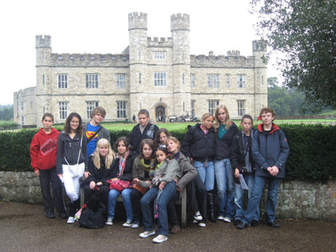

MESSAGE FROM THE DIRECTOR
Welcome to ADAMS UNIVERSITY. Visit our extensive website to learn about the
university, apply for admission and engage with members of the ADAMS community.
You will also find a vibrant KIU presence on our social media. Our school is
open to student interaction, notable faculties, and involved alumni and
take a look at how our scholars are creatively exploring new academic heights.
Backed by confidence and purpose, ADAMS is a fast growing institution attributing
its growth to the vision and zeal of Board of Trustees and
University Council, to ensure that the university reaches new heights of higher
education delivery not only in Uganda but, also in the East African Region.
With a vibrant management team, studious staff and dedicated students, KIU has
over the past 10 years superseded the imagination of many. The investment in
infrastructure, financial, material and human resources is undoubtedly parallel to none.
Many of ADAMS students have also been a significant contribution in promoting and
elevating the university’s status in various scopes of life, relating to
life after university. There have also been several support initiatives
jointly undertaken by ADAMS and Government of Uganda in partnership with other
regional governments, creating and sustaining public confidence in the university.
We have transformed the campus and looking back at the past year I have been
Vice-Chancellor, I am encouraged and confident. I have a strong, dedicated and
reliable support team to help push for positive change, while the student
community has a renewed trust and confidence.
The moment you enter ADAMS, it is a different embodiment of positive work and
study environment ascertained by both staff and students.
It is an exciting time to be a part of the ADAMS community and I invite you to
explore and remain engaged with us, online and in person.
Dr. KALULE ADAM,
DIRECTOR.